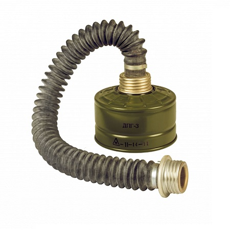

Протигаз цивільний модель 7
Протигаз цивільний модель 7 (ЦП-7) - фільтруючий
засіб індивідуального захисту органів дихання,  очей і шкіри обличчя людини. Був розроблений у 1983 і виробляється до нині
очей і шкіри обличчя людини. Був розроблений у 1983 і виробляється до нині
Лицьова частина (маска) цивільного протигазу ЦП-7 складається з корпусу маски об'ємного типу, забезпеченої обтюратором, відформованим в одне ціле з корпусом маски, очкового вузла з плоскими стеклами круглої форми, переговорного пристрою, вузлів клапана вдиху і клапана видиху, оголів'я з п'ятиточковим кріпленням до корпусу маски . Лицьова частина має п'ятиточкові кріплення лямок оголів'я. Міцність щічних кріплень забезпечують з'єднувальні елементи - металеві «самозатяжні» пряжки. На щічних лямках розташовані пластмасові фіксатори. Вузол вдиху посилений металевим хомутом і складається із пластмасової сідловини армованої зсередини металевою різьбовій втулкою. На вузол вдиху зсередини одегнений пластиковий обтічник. Маска представлена у виді трьх розмірів - 1, 2, 3
Фільтрувально-поглинаюча коробка (ФПК) - має форму циліндра. Вона прикріпляється до маски на різбу (40мм) до клапану вдоху. Вона складається з протиаерозольної частини (гармошка), яка складаеться з картоноподібного матеріалу, який нагадує своєю формою "гармошку". Також вона складається з фільтрувальної частини (шихта). Вона складається з активованого вугілля, який представлений у гранулах. Готова ФПК повинна бути цілою, без вмятин та порушень цілісності корпусу, також неповинно бути пересипання вугілля в шихті, це можна легко перевірити, достатнь потрясти філтр (ФПК) Час захисної дії не менше 55 хвилин.
Увага! Цей протигаз не захищає від парів аміаку та його дочірніх продуктів! Щоб запобігти отруєнню потрібно використовувати ДПГ-3(додатковий фільтр-патрон)!